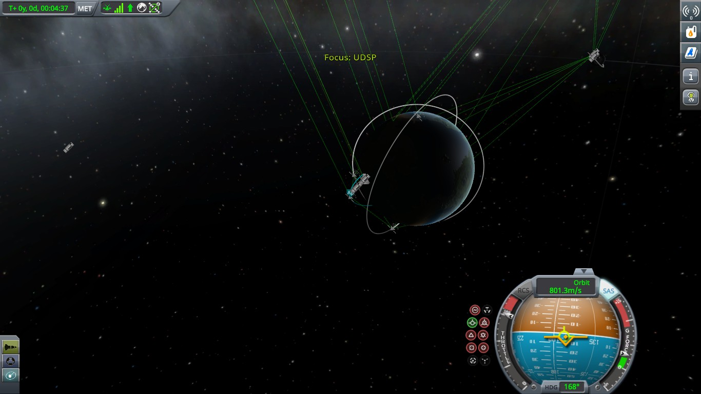
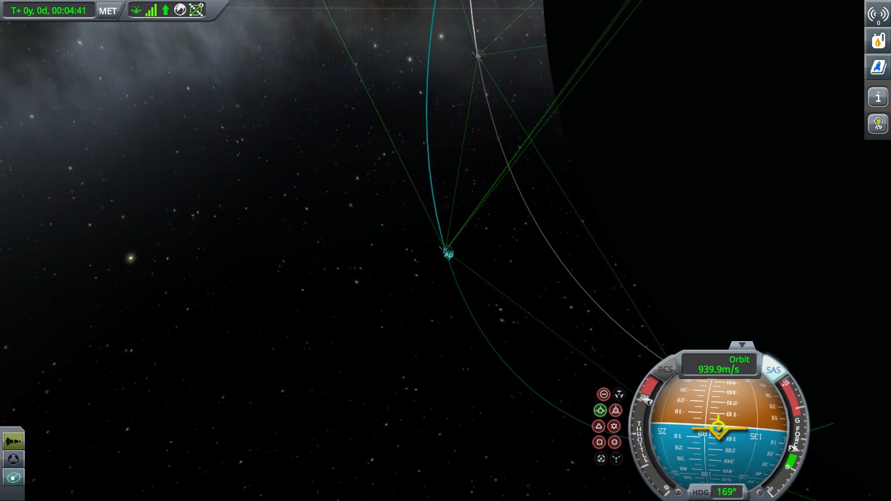
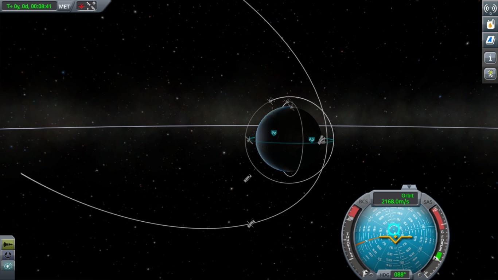

The KSPedia online
Tips for Orbiting
Orbiting is often one of the first challenges to get past often due to having the limitation of fuel on the orbiting stage. The orbit needs to have both the apoapsis [Highest part of the orbit] and periapsis [lowest point of the orbit] out of the atmosphere.
The orbit also needs to have a slight circular shape as this allows for easy retrograding [reverse thrust] and re-entry.

To perform the orbit you need to start with a parabolic [arcing] trajectory at a [recommended] 80 to 100km apoapsis. You then need to start the engine before you get to the apoapsis, facing a prograde direction. Full throttle the engine and keep burning until the periapsis marker appears. Then keep burning the engines until the orbit turns into a circler orbit, with your ship being halfway around the orbit.
 